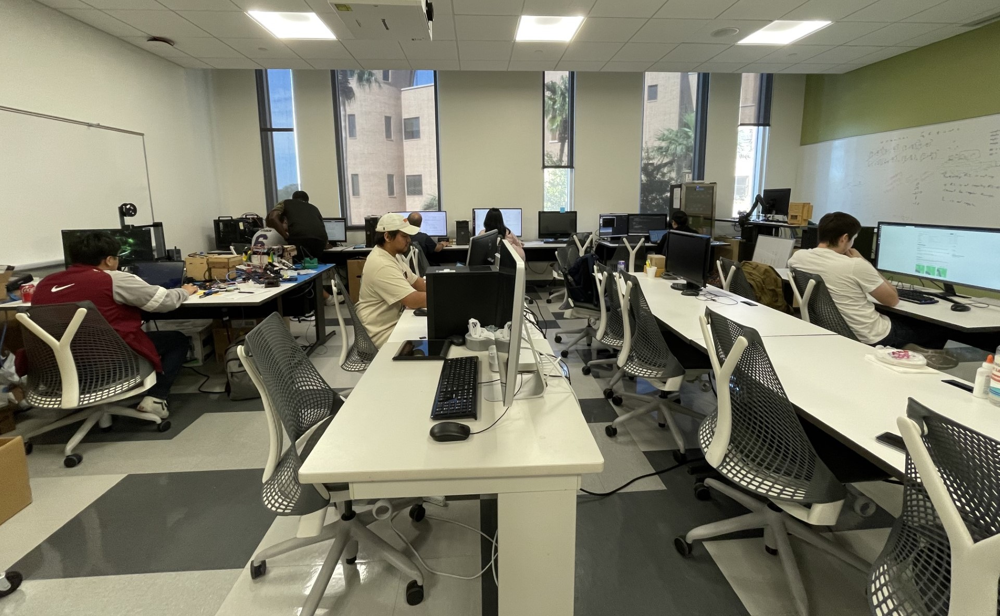
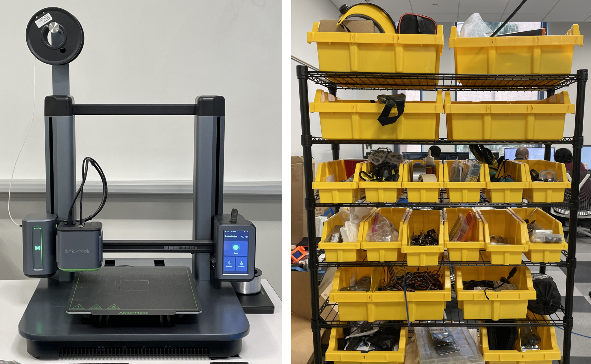
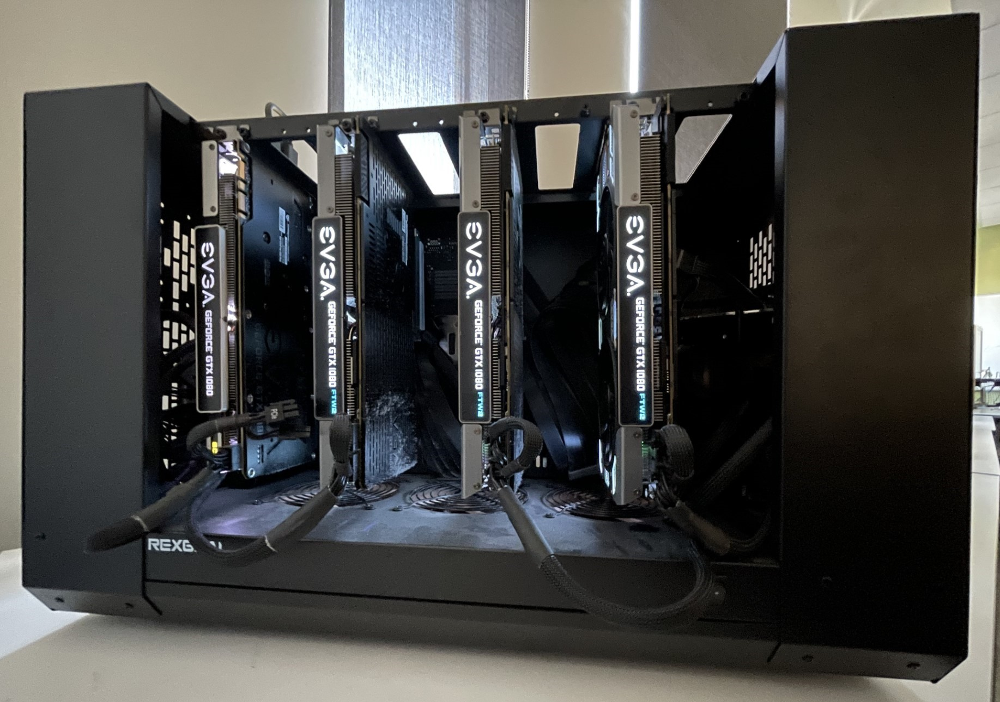
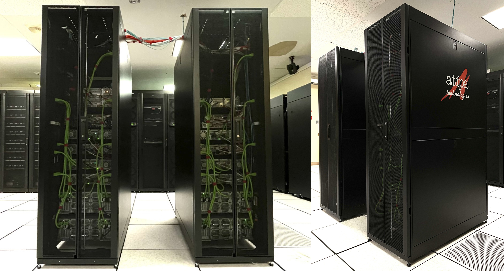

Location
University of Texas - Rio Grande Valley, Edinburg TX 78539
The Machine Intelligence Lab knows research in reinforcement learning can be at times tedious and exhausting. In response, we provide our researchers with their own workspace where they have access to multiple technologies, including computers, printers, whiteboards, and projectors. For training data sets we provide our researchers with multiple computers, each with a RTX 3080 GPU, and a GPU Cluster with 4 GTX 1080 GPUs for larger data sets. Need to print something in 3D? The MI Lab has an AnkerMake 3D Printer made available to all researchers. Alongside providing our researchers with the best technology, our lab is equipped with a refrigerator stocked with a variety of beverages.
 Training data sets with a single GPU can sometimes take up to hours or days depending on the size of the data set. When data sets become too large, our researchers turn to our GPU Cluster. Our GPU Cluster is equipped with 4 GTX 1080 GPUs, Intel Core i7-9800X CPU, 128 GB of RAM, and 1 TB of storage. The cluster is made available through Jupyter Notebook, a web interface that allows researchers to interact with the cluster from their computers.
Need something more powerful? Sometimes data sets can be too large for even the GPU Cluster to handle. In times like these, we turn to our High Performance Computing (HPC) Center, where we have more powerful resources at our disposal. Our HPC Center is equipped with 8 A100 GPUs, 2 Intel Xeon Gold 6330 CPUs, and 1 TB of DDR4 RAM. With a memory bandwidth of 67 GB/s Read BW and 33 GB/s Write BW.
University of Texas - Rio Grande Valley, Edinburg TX 78539